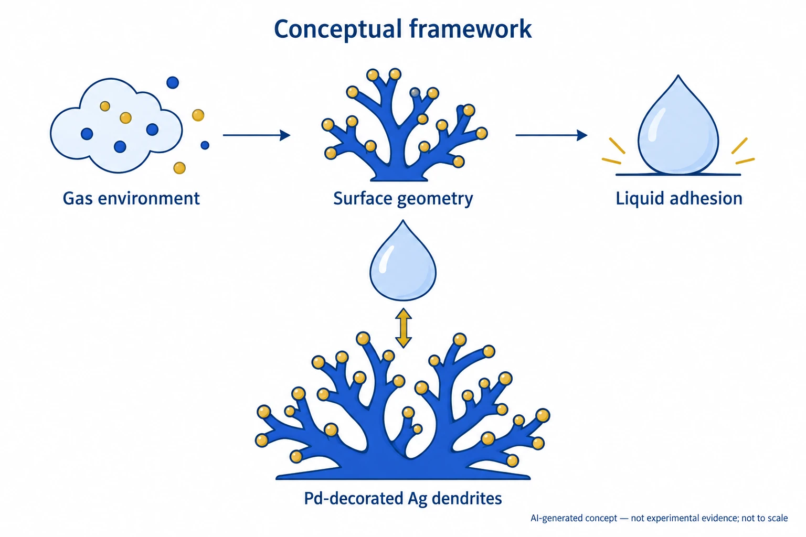

Background
Gas-induced shape changes in palladium-decorated silver dendrites switch the adhesion of water and lower-surface-tension liquids. Excess palladium deposition and oil wetting can eliminate reversibility.
What the study found
Gas-responsive changes in palladium-decorated silver dendrites reversibly switch the adhesion of water and lower-surface-tension liquids.
Switching between air and hydrogen extends control to oily liquids and links changes in surface shape to liquid-contact area.

This AI-generated, not-to-scale concept diagram connects gas environment, surface shape and liquid adhesion on palladium-decorated silver dendrites. The studied PFDT treatment and actual coating and particle distribution are omitted. Arrows show the switching concept, not measured results or perfect reversibility.
Dots, branches and droplets distinguish materials and functions. They do not specify gas composition or concentration, palladium coverage, structure size, contact angles, adhesion forces, response time, lifetime, cycle count or operation with every liquid. Arrows do not depict lifting or levitation, and repeated droplets do not compare samples or before-and-after results.
This is not a reproduced paper figure and does not establish permission to reuse the original figure.
Questions and limits
The paper identifies an operating limit: excessive palladium deposition leads to oil wetting and loss of reversibility.
How to compare the results
Compare surface tension, liquid volume, palladium coverage, gas composition, and cycle count. Assess adhesion force separately from contact angle.
Related reading
Bioinspired self-repairing slippery surfaces with pressure-stable omniphobicity
Slippery liquid-infused porous surfaces (SLIPS) offer a passive-repellency approach for comparison with gas-controlled adhesion switching.
The approaches serve different purposes, so contact angle alone cannot establish which performs better.
Abstract-based introductionRESEARCH NEWS
Research in the news
Unverified candidates and access limits (1)
Sources used in this summary
This summary draws on the main text and original figures. Supplementary materials and underlying data have not been independently reviewed in full.